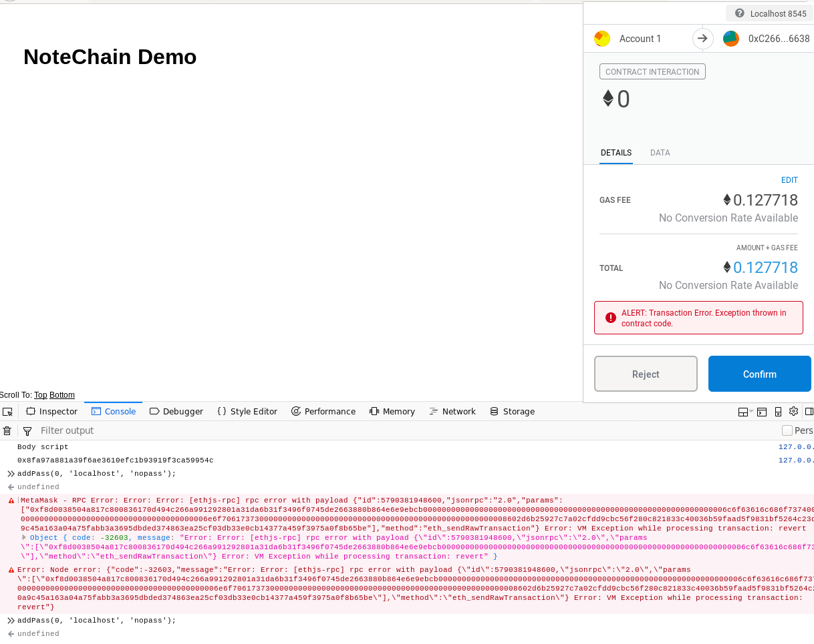

I was having a lot of issues communicating with the NoteChain contract, specifically running createNote().
I’ve created a new testing branch, and my own Smart Contract (PassMe.sol), to test with — I’ve been thinking more critically about how much excess functionality the NoteChain contract needs, and thought it’d be better to just create a new one with only what I need (ie. no public keys/public reading functions).
I’ve been recieving this error (or similar), when I try to run addPass (the same as createNote, except without public key argument)
MetaMask is able to detect this error before execution, as when I go to accept the transaction it warns:

Troubleshooting I’ve tried:
* removing the payFee modifier
* creating the addPass function/removing the public key
* removing the assigning of an owner to the key (via the passToOwner mapping)
* removing the .push'ing to the ownerPasswds array
* removing the emit PassAdded
* changing type of arguments _href (_title) and _pass (_content) to string (from bytesX)
The issue was that I wasn’t supplying a value: x option in .send({...}), which lead to the failure of contract execution. Which I caught when I ran across the amusingly titled VM Exception while processing transaction: Revert page.
Now I can happily run addPass as so:
contract.methods.addPass(0, \_web3.utils.asciiToHex('href',12), \_web3.utils.asciiToHex('password', 32)).send({from: acc, value: \_web3.utils.toWei('0.0002')});However, I still get the error when calling getPass: MetaMask - RPC Error: Internal JSON-RPC error. Object { code: -32603, message: "Internal JSON-RPC error." }
One concern that I’ve had is the actually implementation details of a chrome extension that inherently relies on another extension (MetaMask).
I’m not sure what the interaction between the two will be when my extension causes a popup from MetaMask? I think this might cause some issues with my extension’s function.
One nice thing about the HTML nature of the extension is that it should be fairly trivial to first develop a standalone webpage, and then attempt to port it to a chrome extension (simply by including a manifest.json, which Chrome interprets to create an extension in the browser).
On another note, one of the upsides to using the NoteChain contract is that it’s already deployed on the mainnet, meaning that if someone wants to actually use my project they can (whereas I don’t currently own any ETH, meaning that I wouldn’t be able to deploy my contract to the mainnet).
The following additional changes have been made to my test page (v3 in the testing branch)
* Set _web3.eth.defaultAccount, instead of saving a global variable acc; defaultAccount is used for the from: field automatically, when none is supplied.
* Added the alias function getPassCount (js), which evokes the contract method of the same name, and returns the output, converted hex=>number
The following issues were encountered:
* The first time a tab calls ethereum.enable(), it is async, but all of the following times it isn’t and including an await statement causes an error, I’m not really sure how to fix this, since I would need some sort of initialisation page that had an await, and then the actual interactive page wouldn’t?
Published: 2019-06-20